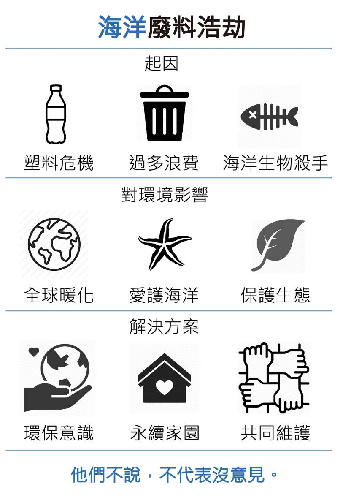

海廢浩劫報告
 全球一年產出的 1.8 兆的海洋垃圾中，平均有 250
個垃圾是由你我產出的
全球一年產出的 1.8 兆的海洋垃圾中，平均有 250
個垃圾是由你我產出的
海廢污染來源

由於消費主義、我們日常使用的塑膠數量增加，塑膠污染問題呈現指數級增長。這些物品中有許多是一次性物品，使用一次就被扔進垃圾桶。但是一旦垃圾桶被清空，這種塑料會發生什麼？它不會簡單地消失在空氣中。它通常以某種方式或形式存在於環境中，其中大部分最終都會在海洋中結束。
海洋廢棄物的兩個常見來源：
陸地(80%)
來自海灘遊客的垃圾，以及已經吹入海洋或被雨水沖刷的碎片
海洋(20%)
來自船舶和船隻在海上的垃圾，以及魚餌，如誘餌箱上的塑料、廢棄的釣魚線或漁網，以及廢棄的漁具
所有海洋廢棄物有 80％ 都來自陸地來源
 ↓
↓
↓

海廢污染數據
 海洋增加熱含量，北極冰厚度降低
海洋增加熱含量，北極冰厚度降低


結論
改善環境，由你我做起開始

slide